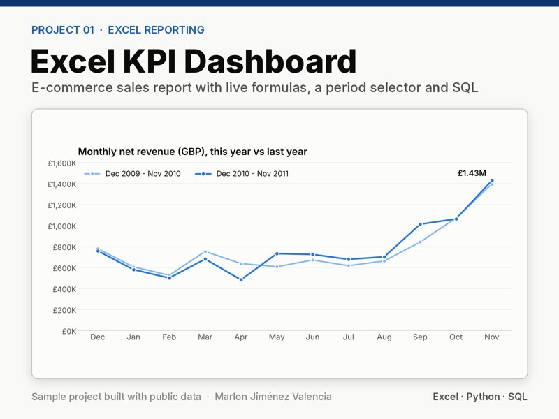
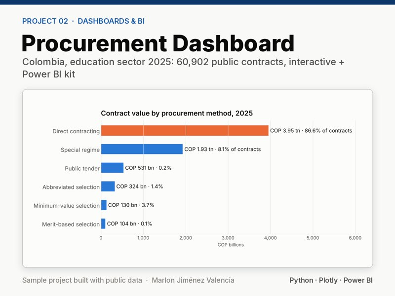
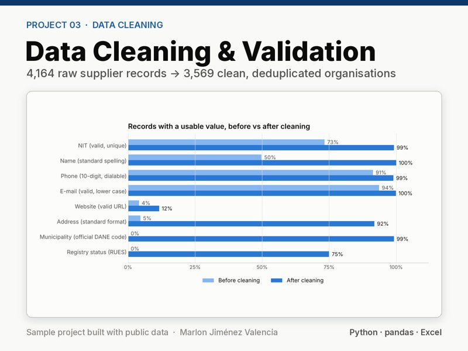
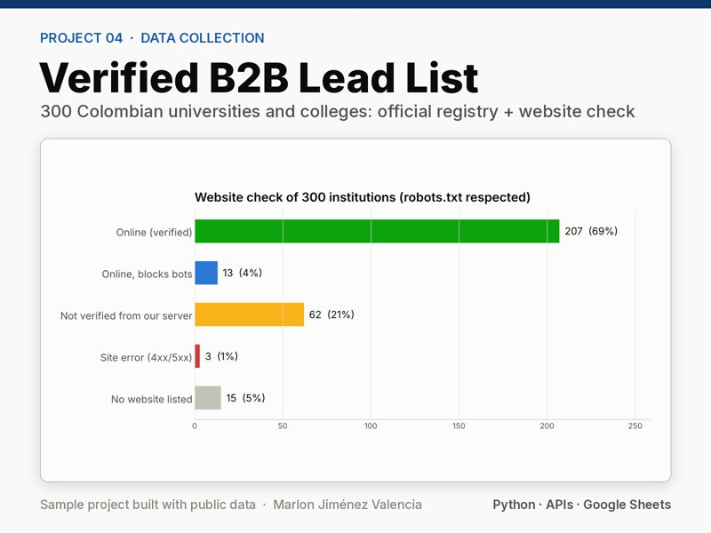
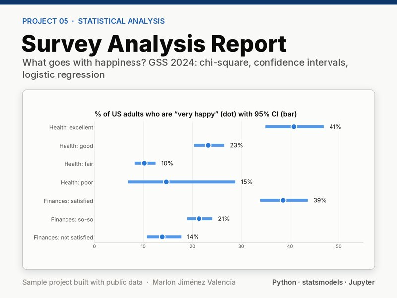
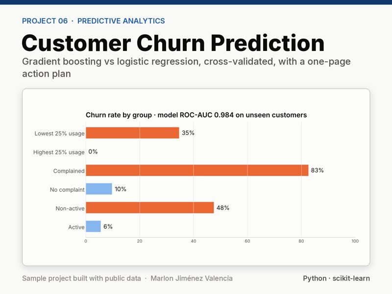
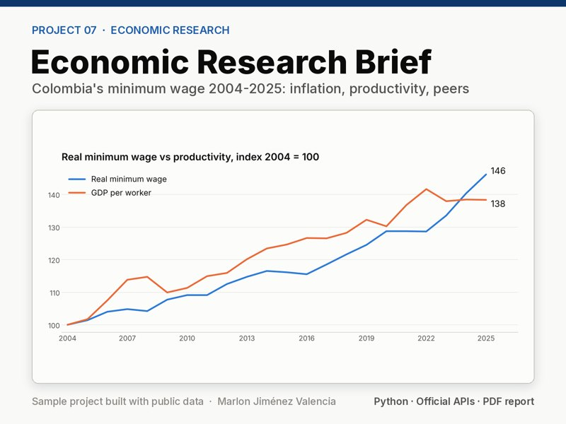
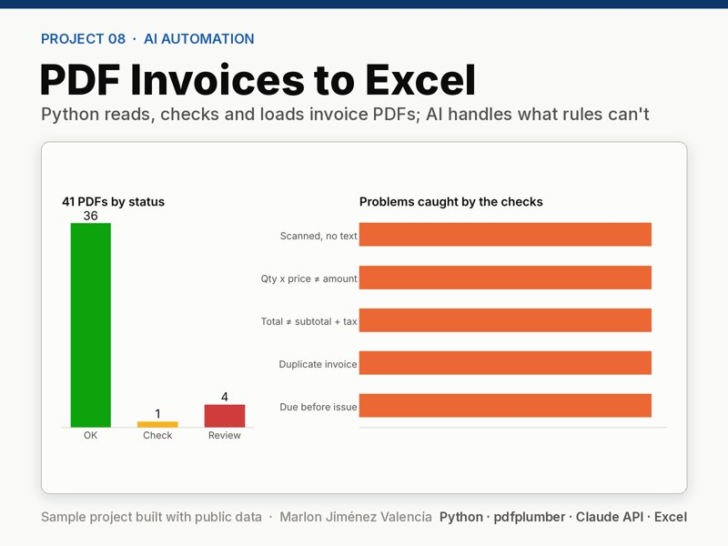

Project 01 · Excel reporting
Excel KPI Dashboard for E-commerce Sales
1.07 million invoice lines turned into a live Excel KPI dashboard with a period selector: 44,001 formulas, 0 errors.
Marlon Jiménez Valencia · Data analyst · Bogotá, Colombia
Eight sample projects, each built with public data, from the raw download to the deliverable a client receives. Every project rebuilds with one command and documents its sources and licences.

Project 01 · Excel reporting
1.07 million invoice lines turned into a live Excel KPI dashboard with a period selector: 44,001 formulas, 0 errors.

Project 02 · Dashboards and Power BI
60,902 public contracts in one interactive page with filters, plus a Power BI star schema and 12 DAX measures.

Project 03 · Data cleaning
4,164 messy supplier records cleaned, deduplicated and checked against the business registry, with a before/after report.

Project 04 · Data collection
300 Colombian universities and colleges from the official registry, phones normalised and every website checked.

Project 05 · Statistical analysis
A national survey analysed with design-based estimates, chi-square tests and a logistic regression with its assumptions checked.

Project 06 · Predictive analytics
Customer churn model compared and cross-validated without leakage, with a one-page action plan.

Project 07 · Economic research
Colombia's minimum wage against inflation, productivity and other countries, in a 4-page brief from official data.

Project 08 · AI automation
Synthetic invoice PDFs read, checked and loaded into Excel with an error log; optional AI step for scanned files.